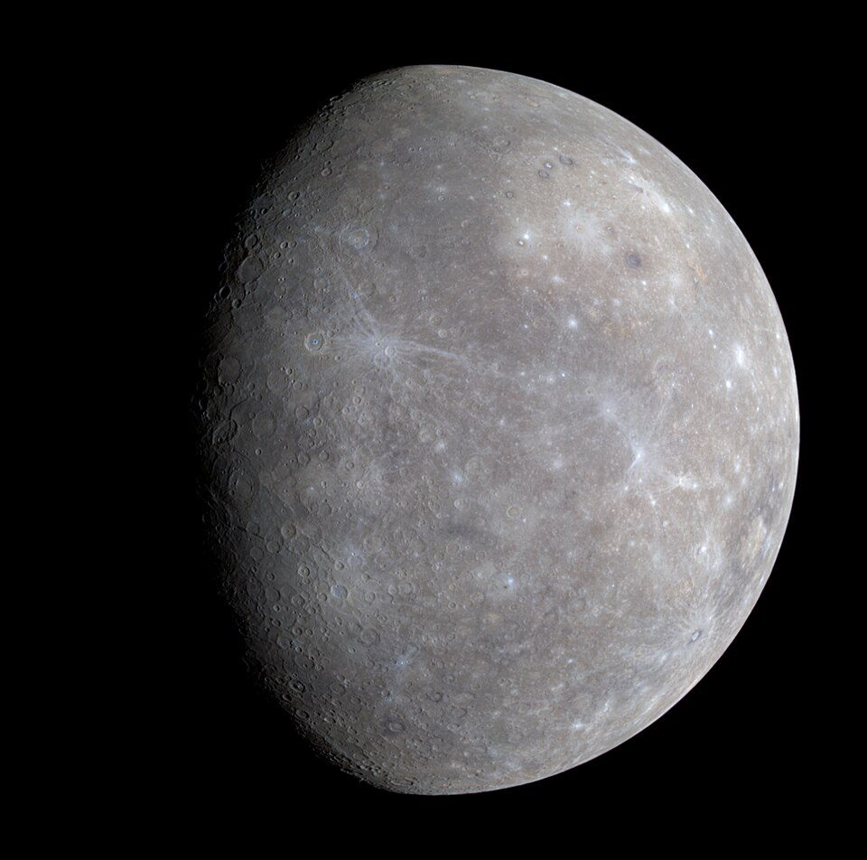

Mercury
The smallest planet and the closest to the Sun: a cratered world of scorching days and freezing nights.


Mercury is the smallest planet in the solar system, only slightly larger than our Moon, and the closest to the Sun. It completes an orbit in just 88 days, at almost 48 kilometres per second, which is why the Romans named it after the swift messenger of the gods.
A day longer than a year
Mercury spins very slowly: it takes 59 Earth days to turn once on its axis. But because it moves so quickly along its orbit, from its surface a full solar day, sunrise to sunrise, lasts 176 Earth days: twice its year.
With almost no atmosphere to hold heat, temperatures are extreme. At noon the ground reaches 430 °C, hot enough to melt lead, and at night it drops to −180 °C. It is the largest day–night difference of any planet.
Ice next to the Sun
Unlikely as it sounds, Mercury has ice. At the bottom of craters near its poles there are places the Sun never reaches, because the planet's axis is almost upright. The MESSENGER probe confirmed in 2012 that these cold traps hold water ice, probably delivered by comets.


A shrinking planet
Mercury has a huge iron core taking up about 85% of its radius. As the core cooled it contracted, and the crust wrinkled like the skin of a drying apple, forming cliffs hundreds of kilometres long and up to three kilometres high. The planet is thought to have shrunk by about 7 kilometres in radius.
Its most famous feature is the Caloris basin, a crater 1,550 km across dug out by a gigantic impact. The shock was so strong that it left a chaotic, hilly terrain on the opposite side of the planet.
The probes that visited it
- Mariner 10 (NASA, 1974–1975) flew past Mercury three times and photographed almost half of the planet.
- MESSENGER (NASA, 2011–2015) was the first to orbit it and mapped it completely before being deliberately crashed into its surface.
- BepiColombo (ESA and Japan) reaches orbit in November 2026 with two spacecraft that will study it at the same time.
How to see it
Mercury never strays far from the Sun in the sky, so it can only be seen briefly at dusk or dawn, very low on the horizon. Copernicus himself is said never to have seen it.
Videos to understand it better
- Mercury 101 | National GeographicNational Geographic · 5.3M views
- Mercury: The Scorched Planet | The Planets | Earth ScienceBBC Earth Science · 2.1M views
Videos are from YouTube and belong to their creators. They only load when you click them. See all videos →